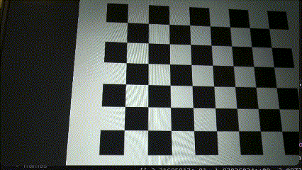
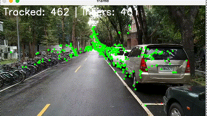
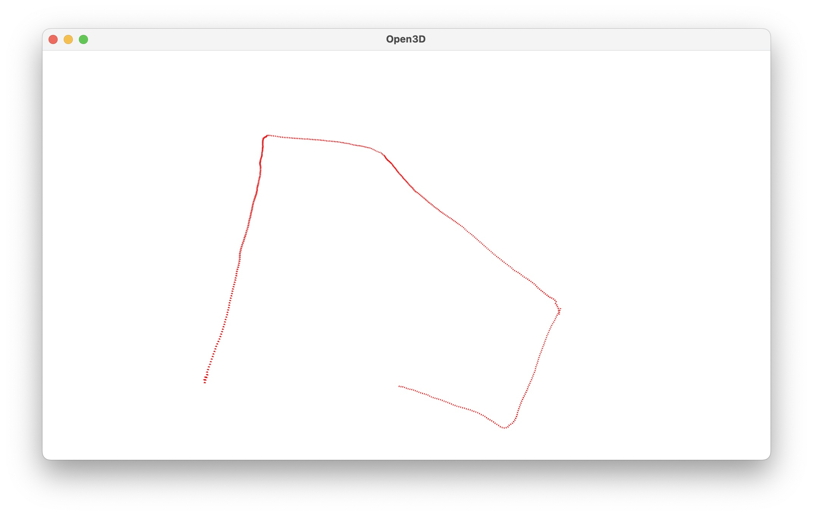
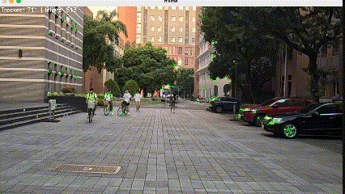
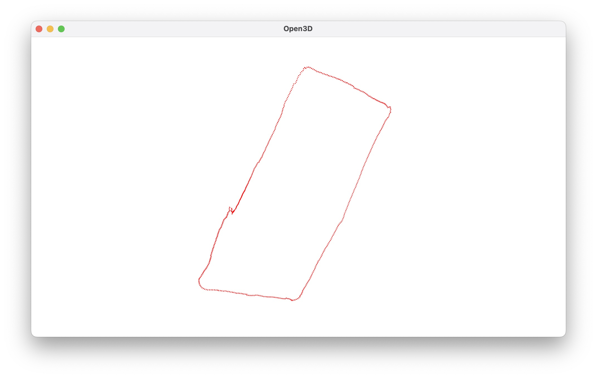
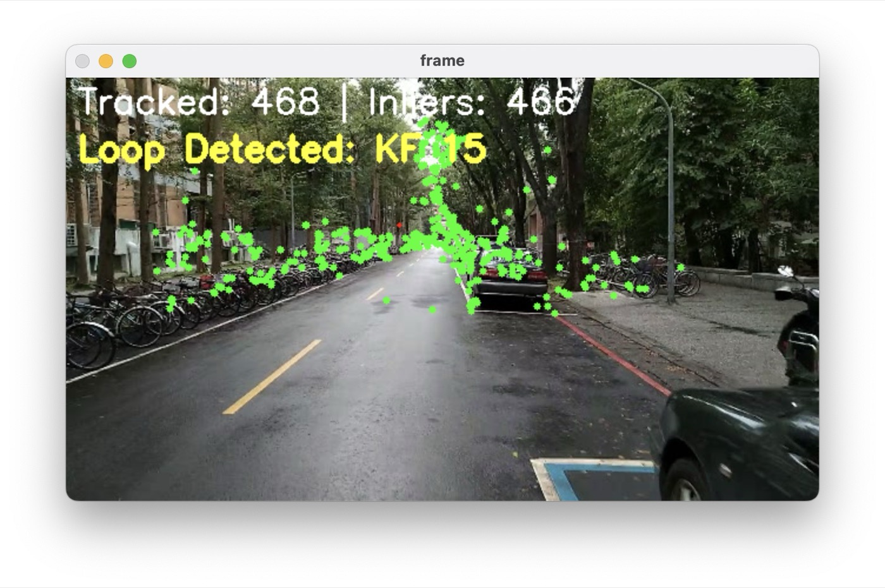
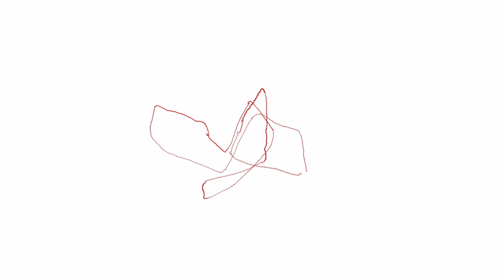

其他專案 · Selected Work · 2025
Visual Odometry
3D Computer Vision 課程作業：用一支手機攝影機拍的連續影格， 手刻一套單目視覺里程計（Monocular VO）——相機校正、ORB 特徵追蹤、 Essential Matrix 估計與 recoverPose 姿態回復， 再用 Open3D 即時畫出相機在 3D 空間中的移動軌跡。Bonus 額外手刻了 Essential Matrix 估計、recoverPose 與 loop detection。
要解決的問題
這是「3D Computer Vision」課程的作業：給定一段連續影格（自己手機拍攝的影片），
在不用任何深度感測器、只靠單一相機影像的前提下，逐幀估計相機在 3D 空間中的相對運動，
累積成完整的移動軌跡——這正是 SfM（Structure from Motion） 與 SLAM 系統中
Visual Odometry 模組要解決的問題。作業分成三個階段：相機校正、逐幀 Tracking、3D 視覺化，
Bonus 則要求手刻 cv2.findEssentialMat、
cv2.recoverPose，
以及額外的 loop detection。
1. Camera Calibration
拍一段棋盤格從不同角度入鏡的校正影片，逐張偵測棋盤角點，用
cv2.calibrateCamera
解出相機內參矩陣（intrinsic matrix）K 與畸變係數（distortion coefficients）。
這一步是後續所有幾何計算的基礎——沒有精準的 K，Essential Matrix 與姿態估計都會系統性偏移。
python3.11 camera_calibration.py case1/calib_video_case1.avi --h 8 --w 6 --output camera_parameters_case1.npy
=> corners found in 6 images
=> Overall RMS re-projection error: 0.2584
Camera Intrinsic
[[493.99 0. 311.86]
[ 0. 494.08 187.33]
[ 0. 0. 1. ]]
Distortion Coefficients
[[ 0.2264 -1.8418 -0.0031 0.0018 4.0550]]
2. Tracking
逐幀處理：先用 ORB 找特徵點（比 SIFT 快很多，適合逐幀即時處理）， 用 BFMatcher（Hamming distance）搭配 ratio test 配對相鄰兩幀， 再用相機內參與畸變係數對配對點做去畸變（undistort）， 接著算出 Essential Matrix，最後用 recoverPose 回復出這一幀相對於上一幀的旋轉 R 與平移 t，累加到全域姿態上。
orb = cv.ORB_create(nfeatures=2000)
kp1, des1 = orb.detectAndCompute(img_prev, None)
kp2, des2 = orb.detectAndCompute(img, None)
bf = cv.BFMatcher(cv.NORM_HAMMING, crossCheck=False)
matches = bf.knnMatch(des1, des2, k=2)
good_matches = [m for m, n in matches if m.distance < 0.75 * n.distance]
# 去畸變（用校正得到的 K 與 dist）
points1 = cv.undistortPoints(pts1_distorted, self.K, self.dist, P=self.K)
points2 = cv.undistortPoints(pts2_distorted, self.K, self.dist, P=self.K)
# Essential Matrix
E, mask_E = cv.findEssentialMat(points1, points2, self.K,
method=cv.RANSAC, prob=0.999, threshold=1.0)
# 從 E 回復出正確的 (R, t)
_, R_new, t_new, mask_pose = cv.recoverPose(E, points1, points2, self.K)
# 累積相機運動：新姿態 = 舊旋轉 × 新旋轉，舊平移 + 舊旋轉 × 新平移
t = t + R @ t_new
R = R @ R_new
recoverPose 在做什麼？Essential Matrix 做 SVD 分解後，數學上必定對應到
4 組可能的 (R, t) 解：(R₁,+t)、(R₁,−t)、(R₂,+t)、(R₂,−t)，四組都滿足對極幾何方程式。
recoverPose
對這 4 組解分別做簡單三角化，檢查算出的 3D 點深度（Z 座標），
選出「讓大部分點都在兩台相機前方」的那一組——這個手性檢查（cheirality check）
就是為什麼 findEssentialMat
後面一定要接 recoverPose 的原因。
3. Result Visualization
用 Open3D 的 LineSet
畫出相機的視錐（frustum）形狀：定義中心點與四個角的 5 個頂點、8 條連接邊，
每一幀都用當前累積的 (R, t) 把這個視錐轉換到世界座標系並加進場景，
逐幀疊加後就形成一條連續的 3D 相機軌跡。
scale = 0.3
points = np.array([
[0, 0, 0], # 相機中心
[-scale, -scale, scale], [scale, -scale, scale],
[scale, scale, scale], [-scale, scale, scale], # 四個角
])
lines = np.array([[0,1],[0,2],[0,3],[0,4], [1,2],[2,3],[3,4],[4,1]])
points_world = (R @ points.T).T + t.T # 轉換到世界座標
line_set = o3d.geometry.LineSet()
line_set.points = o3d.utility.Vector3dVector(points_world)
line_set.lines = o3d.utility.Vector2iVector(lines)
vis.add_geometry(line_set)結果
測了兩段自行拍攝的校園影片。畫面左上角即時顯示 Tracked / Inliers 數量， 綠色點是通過 Essential Matrix RANSAC 篩選後的內點特徵；右側則是 Open3D 即時累積出的 3D 相機軌跡（俯視角），Case 2 的路徑繞了一圈後回到接近起點的位置——這正是後面 loop detection 想要驗證的場景。




Bonus 1 & 2：手刻 Essential Matrix 與 recoverPose
不呼叫 OpenCV 內建函式，自己實作 8-point algorithm 估計 Essential Matrix： 先用內參把像素座標轉成相機歸一化座標，組出線性方程組後 SVD 求解， 再強制秩為 2（rank-2 constraint）讓結果符合 Essential Matrix 的數學性質； 搭配 Sampson error 當作 RANSAC 的內點判準，比單純的代數誤差更貼近真實幾何誤差。
def eight_point_E(x1, x2):
# x1, x2: (N,2) 相機歸一化座標
A = np.zeros((x1.shape[0], 9))
A[:,0]=x2[:,0]*x1[:,0]; A[:,1]=x2[:,0]*x1[:,1]; A[:,2]=x2[:,0]
A[:,3]=x2[:,1]*x1[:,0]; A[:,4]=x2[:,1]*x1[:,1]; A[:,5]=x2[:,1]
A[:,6]=x1[:,0]; A[:,7]=x1[:,1]; A[:,8]=1.0
_, _, Vt = np.linalg.svd(A)
E = Vt[-1].reshape(3, 3)
U, S, Vt = np.linalg.svd(E) # 強制 rank-2
S[2] = 0.0
return U @ np.diag(S) @ Vt
def sampson_error(E, x1n, x2n):
x1h = np.hstack([x1n, np.ones((len(x1n), 1))])
x2h = np.hstack([x2n, np.ones((len(x2n), 1))])
Ex1 = (E @ x1h.T).T
Etx2 = (E.T @ x2h.T).T
num = np.sum(x2h * (E @ x1h.T).T, axis=1) ** 2
denom = Ex1[:,0]**2 + Ex1[:,1]**2 + Etx2[:,0]**2 + Etx2[:,1]**2
return num / np.clip(denom, 1e-12, np.inf)
recover_pose_custom()
則對 SVD 分解出的 4 組候選 (R, t) 逐一做線性三角化，
統計每組解讓多少點同時落在兩台相機前方（Z > 0），取 count 最高的一組作為最終姿態——
跟 OpenCV 內部的邏輯一致，只是自己刻了三角化與計數過程。
def recover_pose_custom(E, pts1_px, pts2_px, K, inlier_mask=None):
x1n = normalize_points_with_K(pts1_px, K)
x2n = normalize_points_with_K(pts2_px, K)
R1, R2, tvec = decompose_essential(E) # SVD 分解 E
candidates = [(R1, tvec), (R1, -tvec), (R2, tvec), (R2, -tvec)]
best_count, best_R, best_t = -1, None, None
P0 = np.hstack([np.eye(3), np.zeros((3, 1))])
for R_cand, t_cand in candidates:
P1 = np.hstack([R_cand, t_cand.reshape(3, 1)])
count_front = 0
for x1, x2 in zip(x1n, x2n):
X = triangulate_linear(P0, P1, x1, x2)[:3] # 線性三角化
if X[2] > 0 and (R_cand @ X + t_cand)[2] > 0:
count_front += 1 # 兩台相機前方都看得到
if count_front > best_count:
best_count, best_R, best_t = count_front, R_cand, t_cand.reshape(3, 1)
return best_count, best_R, best_tBonus 3：Loop Detection
Case 2 的軌跡最後繞回起點附近，代表相機看到了曾經看過的場景——這正是 loop detection 要抓的訊號。 做法分三步：
- 關鍵影格：每經過固定幀數挑一個關鍵影格，存下該幀的 inlier 特徵點與姿態
- 候選搜尋：新關鍵影格出現時，用 ORB 描述子跟資料庫裡「非最近幾幀」的關鍵影格做配對，快速篩出候選
- 幾何驗證：對候選重新做 Homography + RANSAC，inlier 數需超過門檻才判定為真正的 loop，避免只是視覺相似造成的誤判
loop_detected, loop_kf_idx = False, -1
if des2 is not None and len(kp2) >= 20 and len(keyframes) > recent_ignore:
for kf in keyframes[:-recent_ignore]: # 跳過最近的關鍵影格，避免瑣碎匹配
matches_kf = bf.knnMatch(kf['des'], des2, k=2)
good_kf = [m for m, n in matches_kf if m.distance < 0.75 * n.distance]
if len(good_kf) >= 40:
pts_db = np.float32([kf['kp'][m.queryIdx].pt for m in good_kf]).reshape(-1,1,2)
pts_cur = np.float32([kp2[m.trainIdx].pt for m in good_kf]).reshape(-1,1,2)
H, mask_H = cv.findHomography(pts_db, pts_cur, cv.RANSAC, 3.0)
if mask_H is not None and np.count_nonzero(mask_H) >= loop_inlier_thresh:
loop_detected, loop_kf_idx = True, kf['idx']
break

學到的事：單目 VO 沒有尺度資訊（scale ambiguity），純靠逐幀姿態累積， 軌跡會隨著幀數增加持續漂移（drift）——Case 2 起點與終點對不齊就是證據。 Loop detection 提供了「回到同一個地方」的訊號，是後續做 pose graph 優化 校正漂移的前提；手刻 Essential Matrix 和 recoverPose 也讓我更清楚 OpenCV 那幾行函式呼叫背後，藏著整套對極幾何與三角化的數學。